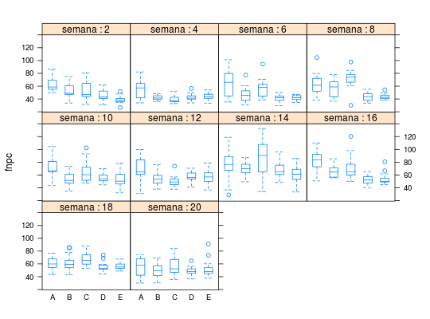
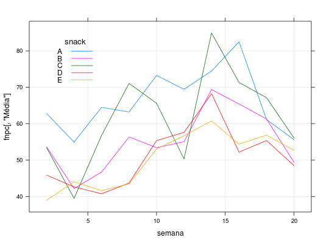

Dados de um experimento desenvolvido pelo Departamento de Nutrição da Faculdade de Saúde Pública da USP em que 5 tipos diferentes de um novo snack, com baixo teor de gordura e de ácidos graxos, foram comparados ao longo de 20 semanas. Nesse novo produto a gordura vegetal hidrogenada, responsável pela fixação do aroma do produto, foi substituída, totalmente ou parcialmente, por óleo de canola. Ao todo foram produzidas 750 observações, referentes a 15 avaliações para cada tipo de snack a cada 2 semanas.
Um data.frame com 750 observações e 3 variáveis.
semanatipoA: 22% de gordura, 0% de óleo
de canola, B: 0% de gordura, 22% de óleo de canola,
C: 17% de gordura, 5% de óleo de canola, D: 11%
de gordura, 11% de óleo de canola e E: 5% de gordura,
17% de óleo de canola.fnpcPAULA (2004), Exemplo 2.8.1, pág. 150; Exemplo 2.9.3, pág. 169.
data(PaulaEg2.8.1)#> Warning: data set ‘PaulaEg2.8.1’ not foundstr(PaulaEg2.8.1)#> 'data.frame': 750 obs. of 3 variables: #> $ semana: int 2 2 2 2 2 2 2 2 2 2 ... #> $ tipo : Factor w/ 5 levels "A","B","C","D",..: 2 2 2 2 2 2 2 2 2 2 ... #> $ fnpc : num 57.3 70.9 48.8 43.2 47.1 ...# Experimento balanceado, 15 observações para cada tipo em cada # semana ftable(PaulaEg2.8.1[, c("tipo", "semana")])#> semana 2 4 6 8 10 12 14 16 18 20 #> tipo #> A 15 15 15 15 15 15 15 15 15 15 #> B 15 15 15 15 15 15 15 15 15 15 #> C 15 15 15 15 15 15 15 15 15 15 #> D 15 15 15 15 15 15 15 15 15 15 #> E 15 15 15 15 15 15 15 15 15 15xtabs(fnpc ~ tipo + semana, data = PaulaEg2.8.1)#> semana #> tipo 2 4 6 8 10 12 14 16 18 #> A 942.15 824.33 967.58 948.38 1099.11 1041.86 1117.18 1237.80 917.58 #> B 804.85 632.78 700.89 845.68 801.31 825.84 1041.00 981.30 919.45 #> C 801.87 592.10 852.07 1066.25 984.49 754.98 1274.29 1070.25 1007.35 #> D 688.01 639.67 611.32 655.23 830.49 864.38 1023.82 783.01 830.80 #> E 584.47 660.53 624.35 651.86 795.87 850.57 911.59 816.02 852.87 #> semana #> tipo 20 #> A 834.19 #> B 741.03 #> C 841.20 #> D 727.32 #> E 790.40library(lattice) bwplot(fnpc ~ tipo | factor(semana), pch = "|", data = PaulaEg2.8.1, as.table = TRUE, strip = strip.custom(strip.names = TRUE, var.name = "semana"))# Estatísticas descritivas resumo <- aggregate(fnpc ~ tipo + semana, data = PaulaEg2.8.1, FUN = function(x) { c("Média" = mean(x), "D.Padrão" = sd(x), "C.Variação" = sd(x)/mean(x), "n" = length(x)) }) ftable(xtabs(fnpc ~ tipo + semana, data = resumo))#> Média D.Padrão C.Variação n #> tipo semana #> A 2 62.81000000 11.47171615 0.18264156 15.00000000 #> 4 54.95533333 15.59971651 0.28386174 15.00000000 #> 6 64.50533333 21.78291528 0.33769169 15.00000000 #> 8 63.22533333 17.37365323 0.27478943 15.00000000 #> 10 73.27400000 15.81673833 0.21585744 15.00000000 #> 12 69.45733333 19.67049984 0.28320264 15.00000000 #> 14 74.47866667 24.59196758 0.33018808 15.00000000 #> 16 82.52000000 16.50642083 0.20002934 15.00000000 #> 18 61.17200000 9.88297179 0.16156038 15.00000000 #> 20 55.61266667 15.16776962 0.27273948 15.00000000 #> B 2 53.65666667 11.65907106 0.21729026 15.00000000 #> 4 42.18533333 3.81665872 0.09047359 15.00000000 #> 6 46.72600000 12.39882068 0.26535164 15.00000000 #> 8 56.37866667 13.41021139 0.23785968 15.00000000 #> 10 53.42066667 9.94030142 0.18607595 15.00000000 #> 12 55.05600000 10.79779263 0.19612381 15.00000000 #> 14 69.40000000 10.10541510 0.14561117 15.00000000 #> 16 65.42000000 9.58026096 0.14644239 15.00000000 #> 18 61.29666667 12.85494883 0.20971693 15.00000000 #> 20 49.40200000 10.49748759 0.21249115 15.00000000 #> C 2 53.45800000 13.85595550 0.25919330 15.00000000 #> 4 39.47333333 5.57739912 0.14129537 15.00000000 #> 6 56.80466667 14.82004572 0.26089486 15.00000000 #> 8 71.08333333 14.80030244 0.20821059 15.00000000 #> 10 65.63266667 16.46413915 0.25085281 15.00000000 #> 12 50.33200000 8.45206163 0.16792620 15.00000000 #> 14 84.95266667 28.21759063 0.33215662 15.00000000 #> 16 71.35000000 18.67000918 0.26166796 15.00000000 #> 18 67.15666667 10.53943321 0.15693800 15.00000000 #> 20 56.08000000 14.38626081 0.25653104 15.00000000 #> D 2 45.86733333 8.30642906 0.18109684 15.00000000 #> 4 42.64466667 5.75230993 0.13488932 15.00000000 #> 6 40.75466667 5.50526095 0.13508296 15.00000000 #> 8 43.68200000 7.09714651 0.16247302 15.00000000 #> 10 55.36600000 7.09875422 0.12821505 15.00000000 #> 12 57.62533333 7.10720748 0.12333477 15.00000000 #> 14 68.25466667 12.03642737 0.17634585 15.00000000 #> 16 52.20066667 7.28421039 0.13954248 15.00000000 #> 18 55.38666667 7.62628412 0.13769170 15.00000000 #> 20 48.48800000 7.10582075 0.14654803 15.00000000 #> E 2 38.96466667 5.90883584 0.15164600 15.00000000 #> 4 44.03533333 5.24127147 0.11902423 15.00000000 #> 6 41.62333333 4.05499809 0.09742127 15.00000000 #> 8 43.45733333 4.46678291 0.10278548 15.00000000 #> 10 53.05800000 11.44717694 0.21574837 15.00000000 #> 12 56.70466667 11.79151200 0.20794606 15.00000000 #> 14 60.77266667 12.62340992 0.20771525 15.00000000 #> 16 54.40133333 9.22205188 0.16951886 15.00000000 #> 18 56.85800000 5.67408671 0.09979399 15.00000000 #> 20 52.69333333 13.70065674 0.26000740 15.00000000xyplot(fnpc[, "Média"] ~ semana, groups = tipo, data = resumo, type = c("l", "g"), auto.key = list( points = FALSE, lines = TRUE, title = "snack", cex.title = 1.1, corner = c(0.1, 0.9)))